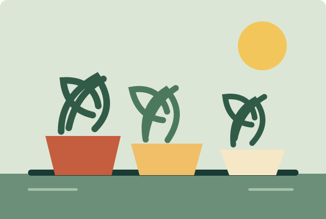
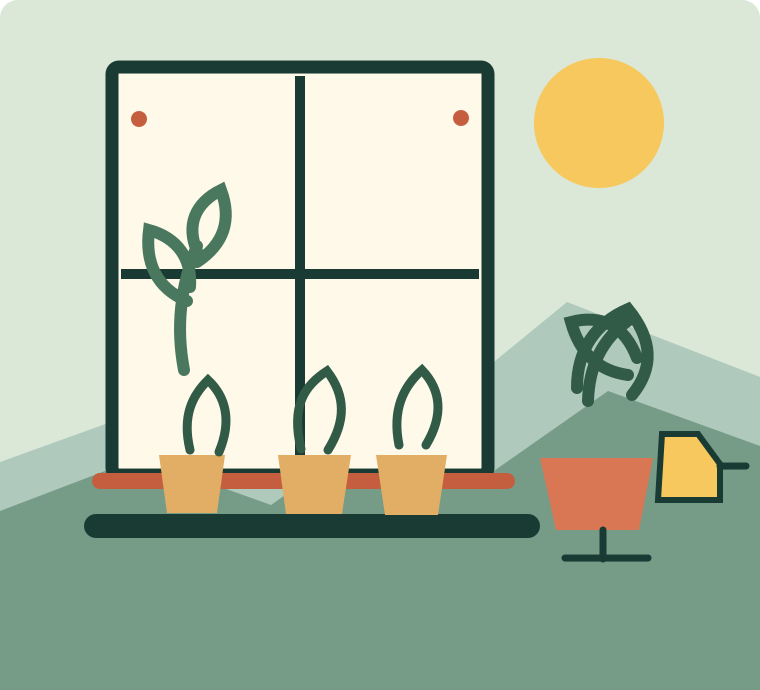
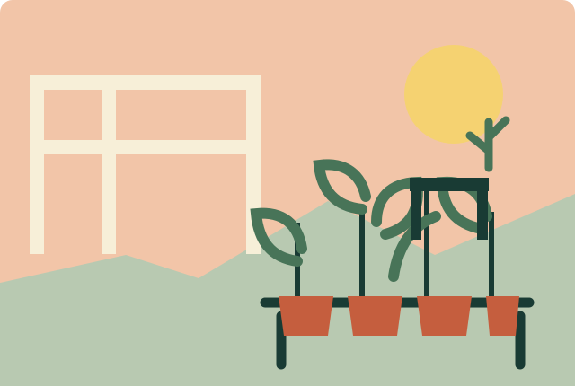

01 — LEARN TOGETHER
The Window Herb Club
A relaxed, small-group class in growing kitchen herbs from cuttings and seed.
90 MINUTESFROM RM 45
A SMALL-SPACE GARDENING STUDIO
Good things grow in unlikely places. We help city dwellers turn a sunny sill, a tiny balcony or a borrowed corner into a patch of their own.
Start where the light lands.

01 — YOUR WINDOW CAN BE A GARDEN
LESS PERFECT. MORE ALIVE.
Kinfield is a fictional urban gardening studio built around one simple idea: you do not need a backyard to learn how to grow.
We make friendly workshops and small, practical projects for people with busy days, borrowed sunlight and exactly as much room as they have.
How it worksChoose a hands-on session, a ready-to-grow kit, or a bit of help with the space you already have.

01 — LEARN TOGETHER
A relaxed, small-group class in growing kitchen herbs from cuttings and seed.
02 — GROW AT HOME
A simple starter set for a sunny windowsill, with a printed care guide.

03 — MAKE A PLAN
A one-to-one planning hour shaped around your light, shelves and schedule.
A concept studio for this student project. Prices and services are illustrative.
03 / FIELD NOTES
A few quiet seconds with a flower in the sun. Sometimes that is enough of a nudge to start.
Short flower film · CC0 via MDN
Tell us about your bright spot, your plant question or the corner you want to make greener.
This classroom form is a visual demo; it does not send or save information.